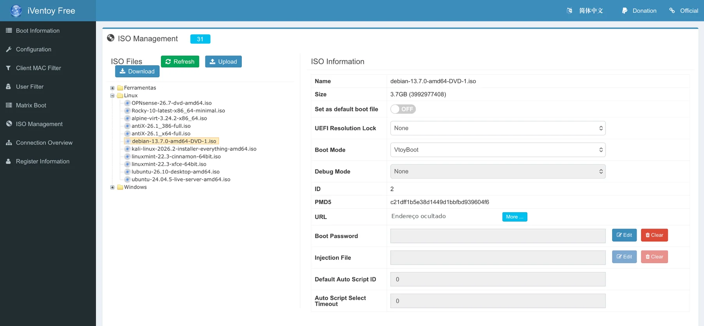

O PXE (Preboot Execution Environment) permite que um computador inicie através da rede, sem precisar de arrancar primeiro a partir de um disco interno ou de uma pen USB. É especialmente útil para instalar sistemas operativos, realizar diagnósticos ou recuperar máquinas.
Mecanismo que permite iniciar um computador pela ligação de rede.
Software que disponibiliza um menu para arrancar, através da rede, sistemas e ferramentas a partir de imagens ISO compatíveis.
Ficheiro que representa uma imagem de disco, frequentemente usado para distribuir instaladores e ferramentas de recuperação.
Dois modos de firmware/arranque que podem exigir configurações diferentes no servidor e no computador cliente.
O servidor no laboratório
A interface do iVentoy Free está acessível no servidor Debian 13 da VM 300, na VLAN 40. A captura mostra uma biblioteca com 31 imagens ISO, organizada em pastas como Linux, Windows e Ferramentas.

Para que serve na prática?
Escolher uma imagem compatível e iniciar a instalação num computador com suporte de arranque pela rede.
Aceder a ferramentas de manutenção sem preparar uma pen USB para cada utilitário.
Explorar as possibilidades e limitações de compatibilidade de sistemas históricos com métodos de arranque modernos.
Manter as imagens organizadas num único servidor, simplificando o acesso e a gestão.
Nem todas as imagens arrancaram como esperado
Durante as experiências de arranque pela rede com o iVentoy, algumas imagens de distribuições Linux que se pretendia utilizar em máquinas virtuais não arrancaram corretamente. Entre os exemplos observados estiveram o Linux Mint e o Kali Linux.
Foi tentado o arranque pela rede para utilização numa VM, mas o processo não decorreu como esperado.
Também apresentou problemas no arranque pela rede nas experiências realizadas para uma VM.
Esta experiência é útil para distinguir a disponibilidade de uma ISO no menu da compatibilidade efetiva de arranque. O resultado pode variar com a imagem, versão do sistema, firmware BIOS/UEFI, opções de arranque e configuração da rede. São hipóteses gerais de diagnóstico, não causas comprovadas destes testes.
O facto de estas imagens terem apresentado dificuldades no arranque pela rede não significa que as distribuições sejam incompatíveis com máquinas virtuais: a instalação direta por ISO e o arranque por PXE são processos diferentes.
Porque é tão útil numa empresa com muitos computadores?
Numa empresa com dezenas ou centenas de postos de trabalho, preparar cada computador com um CD, DVD ou pen USB torna-se repetitivo: é preciso transportar os suportes, atualizar as imagens e repetir o processo em cada equipamento.
Com um servidor PXE, a equipa de informática pode ligar os computadores à rede, escolher o arranque pela rede e selecionar uma imagem disponibilizada centralmente. A mesma biblioteca de sistemas operativos e ferramentas passa a estar acessível a diferentes máquinas, sem preparar um suporte físico para cada intervenção.
Deixa de ser necessário transportar e atualizar várias pens USB ou discos de instalação.
Os técnicos podem arrancar a mesma versão de instalador ou ferramenta em equipamentos compatíveis.
Facilita reinstalações, diagnósticos e recuperação de computadores em vários departamentos.
Quando a biblioteca de imagens muda, a gestão faz-se no servidor em vez de alterar individualmente cada suporte físico.
E quando é preciso replicar uma instalação já preparada?
Para criar várias máquinas com uma instalação-base semelhante — em vez de executar o instalador em cada uma — pode usar-se uma solução de captura e distribuição de imagens de disco, como o FOG Project. O FOG usa PXE/iPXE para arrancar os computadores e permite capturar uma imagem de referência e distribuí-la, incluindo por multicast.
Não confundir: o iVentoy disponibiliza o arranque de instaladores e ferramentas por ISO; o FOG centra-se na captura, reposição e gestão de imagens de máquinas. São abordagens complementares, não equivalentes.
Importante: arrancar uma ISO através de PXE não significa que a instalação fique automaticamente concluída. Para instalar muitos computadores de forma desatendida, podem ser necessários ficheiros de resposta, ferramentas de deployment, automatização, controladores e uma infraestrutura de rede preparada. A compatibilidade varia conforme os equipamentos e imagens.
Este projeto complementa o laboratório Proxmox e os testes com Windows NT e outros sistemas históricos.